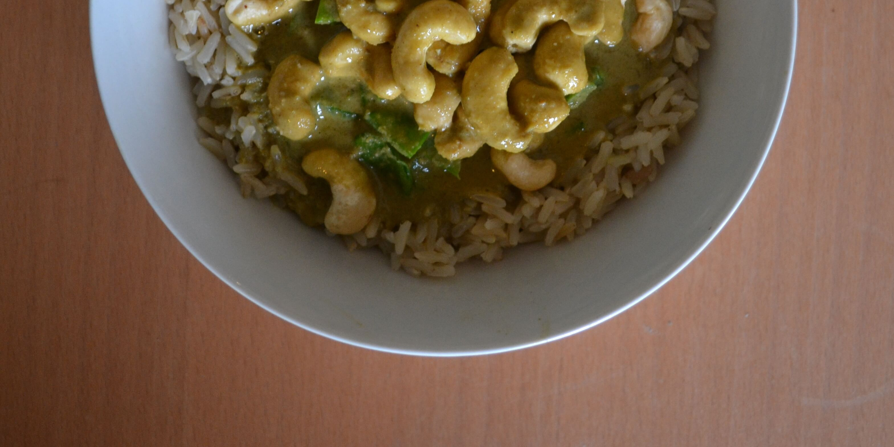

Vegan Thai Green Curry

Serves 3 (808cal per serving)
Ingredients
- 150g Mange Tout 58cal
- 120g Cashews 686cal
- Handful Basil Leaves 3cal
- 1 Tbsp of Olive Oil 119cal
- 400g Can of Cocunut Milk 652cal
- 210g Rice 733cal
Paste
- Thumb of Ginger 6cal
- 4 Cloves of Garlic 18cal
- 3 Green Chillies 6cal
- Stalks of Basil 3cal
- 1 Tbsp of Coriander 16cal
- 1 Tbsp of Cumin 30cal
- 1 Tbsp of Honey 64cal
- 4 Tbsp of Soy Sauce 80cal
- Juice of 2 Limes 15cal
- Water from Can of Coconut Milk
Preperation
- Boil 210g of Rice.
- Chop garlic, ginger, green chillies, basil stalks and add to blender.
- Add coriander, cumin, honey, lemon juice, soy sauce, water from coconut milk and blend.
- Add oil to wok and add paste and coconut milk.
- Add cashews and mangetout and serve over rice.
- Garnish with basil leaves.